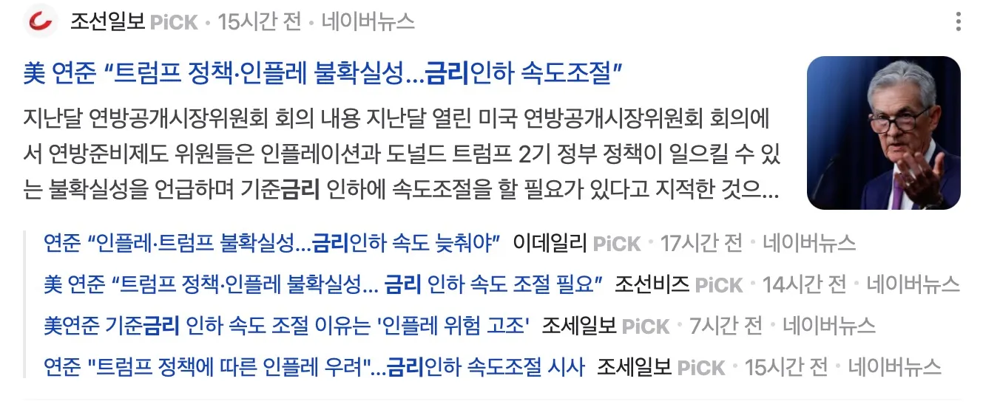

5강 경제뉴스와 지표 보는 눈 기르기

5강 경제뉴스와 지표 보는 눈 기르기
경제전공 X, 전문가 X, 개인 투자자 + 실전 경험
→ 지식 전달이 아니라 경제 뉴스와 지표를 보는 관점(3가지)에 대한 이야기 임.
관점 1. 경제 뉴스에 대한 착각
- 신문사의 가장 큰 고객은 광고내는 기업, 그 다음이 구독자 → 기업 친화적인 신문사
- 기자는 경제학 전공 전문가가 아니다. → 다 믿을수 없다.
- 기자는 자극적인 제목의 글을 쓴다. → 구독자, 조회수
- 증시 전망은 증권사에서 쓴다. → 증권사 이득되도록 거래 촉진
주식은 과장.왜곡 다수, 부동산은 뒷북
뉴스에 휘둘리지 말고, 기사를 잘 활용하자
"어디서 나왔는가", "누가 썼는가", "왜 이 시점인가"를 항상 의심할 것
예) '○○ 주식 지금 사야 한다'는 기사가 왜 이 시점에 나왔는지 확인하기
관점 2. 뉴스에 나오는 지표들




“금리인하 속도조절”
“미 국채금리 4.7% 돌파에 시장 흔들”
“고용지표”
뉴스에 나오는 경제지표로 미 증시가 오르락 내리락 한다.
경제지표를 볼 줄 모르면
- 기자가 쓴 지표와 의견에만 의존하게 된다.
- 이슈화에 필요한 단편적인 지표만 기사화 → 경제 상황에 대한 과장 & 왜곡 발생
- 기사를 써줄 때 까지 원하는 지표를 적시 적절하게 확인할 수 없다.(수세적 입장이 될 수 밖에)
따라서, 필요한 경제지표와 경제 흐름을 이해하는 나만의 관점이 필요하다.
관심갖아야 할 지표
경제확장
| 지표명 | 설명 | 발표주체 / 참고 |
| GDP | 국내총생산 (경제성장률) | 美 BEA / 한국은행 |
| 기업 실적 (EPS) | 기업당 순이익, 실적시즌 참고 | 기업 IR / 금융플랫폼 |
| 주택착공건수 | 건설경기 선행지표 | 美 상무부 |
| 소매판매 (Retail Sales) | 소비자 지출 규모, 민간소비 파악 | 美 상무부 |
| PMI (구매관리자지수) | 제조업·서비스업 경기전망 | ISM / 한국은 제조업지수 |
| 내구재 주문 | 소비자·기업의 설비투자 지표 | 美 상무부 |
| 산업생산지수 | 산업 전반의 생산활동 강도 | 美 연준 / 한국 통계청 |
| 설비투자 | 기업들의 투자 흐름 | 한국 통계청 / KDI |
경제위축
| 지표명 | 설명 | 발표주체 / 참고 |
| 실업률 | 경제활동인구 중 실업자 비율 | 美 BLS / 한국 통계청 |
| 비농업 고용자수 (NFP) | 美 고용지표 핵심, 매달 첫 금요일 발표 | 美 BLS |
| 실업수당 청구건수 | 경기 둔화 여부를 가장 빠르게 반영 | 美 노동부 (주간발표) |
| 노동참여율 | 경제활동 인구 비중 | 美 BLS |
| 임금상승률 | 임금 증가율, 인플레 영향도 있음 | 美 BLS |
| 소비자심리지수 (Consumer Confidence) | 소비자들의 경제에 대한 기대감 | Conference Board / 통계청 |
| ISM 고용지수 | 고용전망 선행지표 | ISM |
| 퇴직률, 채용률 (JOLTS) | 채용공고, 이직 등 노동시장 흐름 | 美 BLS |
통화정책 및 유동성
| 지표명 | 설명 | 발표주체 / 참고 |
| 기준금리 (FFR 등) | 중앙은행이 조정하는 금리 수준 | 美 연준 / 한국은행 |
| 통화량 (M2) | 시중에 풀린 광의 통화 | 한국은행 / 美 연준 |
| 통화유통속도 (Velocity of Money) | 돈이 얼마나 빠르게 순환하는지 | 美 연준 (FRED) |
| 달러인덱스 (DXY) | 주요 6개국 통화 대비 달러가치 | ICE / 환율 플랫폼 |
| 유동성지표 (Bank Reserves) | 초과지준, 예금기관 유동성 | 美 연준 |
| 재할인율 / 기준금리변화 전망 | 정책금리 방향성 참고 | CME FedWatch 등 |
| 장단기 금리차 (Yield Curve) | 장기금리 - 단기금리 차이 / 경기 침체 신호 | 美 재무부 |
| 국채금리 (10년물 등) | 시장금리 지표 / 물가·성장 기대 반영 | 美 재무부 / 채권시장 |
물가지수
| 지표명 | 한글명 | 설명 | 투자 관점에서의 중요성 | 발표기관 |
| CPI | 소비자물가지수 | 소비자가 실제로 체감하는 생활물가 수준주거비, 식료품, 교통비 등 포함 | 인플레이션의 대표 지표금리 인상/인하 결정에 큰 영향 | 美 노동부 (매월) |
| Core CPI | 근원 소비자물가지수 | CPI에서 변동성이 큰 식료품, 에너지 제외더 안정적인 물가 추세 판단 가능 | 연준의 정책 판단에 중요한 참고자료 | 美 노동부 |
| PCE | 개인소비지출지수 | 미국 소비자가 지출한 항목을 기반으로 측정소비 패턴 변화를 반영 (동적 가중치) | 연준(Fed)이 가장 중요하게 보는 지표 | 美 상무부 (BEA) |
| Core PCE | 근원 개인소비지출지수 | PCE에서 식료품·에너지 제외정책적 신뢰도 매우 높음 | 연준 목표 인플레이션 2% 기준 지표 | 美 상무부 |
| PPI | 생산자물가지수 | 생산자가 받는 상품·서비스 가격의 변동원가 상승 → 소비자 물가 전이 가능성 | 선행 물가지표, 기업 실적 영향도 | 美 노동부 |
| Import / Export Price Index | 수입/수출물가지수 | 수입품/수출품의 가격 변동특히 원자재·에너지 수입국에 민감 | 원화 약세 시 수입물가 상승→ CPI 자극 | 美 노동부 |
| 유가, 곡물, 원자재 가격 | - | 국제 원자재 시세 (WTI, 옥수수 등)특정 부문 물가 급등 원인 분석에 도움 | 시장 변동성 유발 가능성 큼, 에너지·식품 관련 투자 참고 | 시장 (시세 실시간) |
경제 지표 확인하는 방법
경제지표 (FRED, 인덱서고)
기준금리(FedWatch)

경제지표 발표, 기업실적 쉽게 확인 : 인베스팅닷컴

관점 3. 인과관계의 중요성
인과관계를 잘 알아야 경제 기사에 흔들리지 않는다.
원인과 결과가 상호 연관이 없는 잘못된 연결
원인과 결과의 순서의 오류
결과에 원인을 끼워 맞추기
금리와 경제의 인과관계?
금리 인하기에 경기침체? VS 경기침체로 금리인하?


장, 단기 금리차


기사만 보면 지금 경기침체가 올 시기임.
이런 것을 이해하라.
1. 금리 인하(원인)가 경기침체(결과)를 부르는 경우
- 장기 저금리로 인한 자산 버블 → 버블 붕괴시 경기침체
- 저금리에도 경제 활성화 실패 → 경기 침체
- 금융기관 수익성 악화 → 경제 부담(자금흐름 둔화, 기업 투자 제한, 가계 소비 위축)
2. 경기침체(원인)로 금리를 내리(결과)는 경우
- 경기침체 → 금리 인하로 경제 부양 목적
- 실업률 상승, 기업 활동 둔화시 금리를 낮춰 경기 부양
경기흐름 파악하기
21년 인플레이션(경기확장 국면) → 22년 금리 인상(경기 긴축)
→ 23년~현재 금리 인하(인플레이션 하락, 경기 긴축 완화)
- 트럼프 금리인하 압박, 유동성 공급, 기업 친화
- 주식 상승 지속 예상, 최근에는 고점 이슈
- 채권 시장보다 주식시장 좋음.
29~30년 경기 침체국면 예상 : 저금리, 자금은 주식 → 채권
관점 4. 시간의 차이
경제기사는 ‘단기 흐름’을 다룰 수밖에 없다
- 뉴스는 하루 단위 또는 주·월 단위의 단기 이슈에 집중될 수밖에 없다.
- 주가는 시시각각 변하고, 경제지표도 수시로 발표되므로, 단기적 해석과 설명 위주의 보도가 많다.
- 이런 뉴스는 실제 시장의 본질이나 장기 흐름과는 다를 수 있음을 인지해야 한다
이것을 인정하라
경제 뉴스는 단기 흐름을 전할 뿐이다. 그것이 진짜 방향성은 아닐 수 있다.
- 뉴스는 참고자료일 뿐, 투자와 의사결정은 장기적 시야로 해야 한다.
- 정보를 소비하는 태도가 중요하다:
- “이 뉴스가 오늘 말하는 것 이상을 함축할 수 있는가?”
- “나의 투자 방향성과 상충하는가? 아니면 일시적 노이즈인가?”
같은 시간이지만 사람마다 기간의 길이가 다르다.
A는 당분간 떨어질거라 예측해서 안산다.
B는 당분간 오를거라 예측해서 산다.
장기적인 흐름의 기준으로 기사를 봐야한다.
누가 맞고 누가 틀리다 할 수 없다. 투자 성향이 다른것일 뿐
장기 투자하는 사람은 당일의 단편적인 기사는 소음일 뿐.
긴 시간의 변화를 예측하려고 노력한다.
(부동산 투자 여담)
제가 주간 부동산 시황을 보는 이유는 시장 변화를 감지하기 위한 것.
있는 그대로 믿으려는 것 아님.
아파트 가격이 전 지역이 동시에 변하지 않고,
한 지역의 모든 아파트가 동시에 변하지 않음.
흐름은 여러것이 모여 데이터로 나옴.
오르는 것, 멈춘 것, 떨어지는 것 → 이 것들이 합쳐서 데이터로 나옴. 그리고 뉴스 기사로 나옴.
어떤 기업의 호재 → 뉴스에 나오면 이미 다 안다. 가격에 이미 반영 되어있음.
기사에서 이야기 하는 내용의 인과관계, 시간의 차이를 알고 읽자.
흐름을 정리해 준 기사만 본다. 차라리 안보고 내가 지표를 보자.
그 동안 즐거웠습니다.
건강한 주식투자 시작 성공? 두려움 타파 했나요?
리치군인클래스 후기 + 카페 후기 부탁해요.
후기 쓰시면 돈 더 잘 벌겁니다.